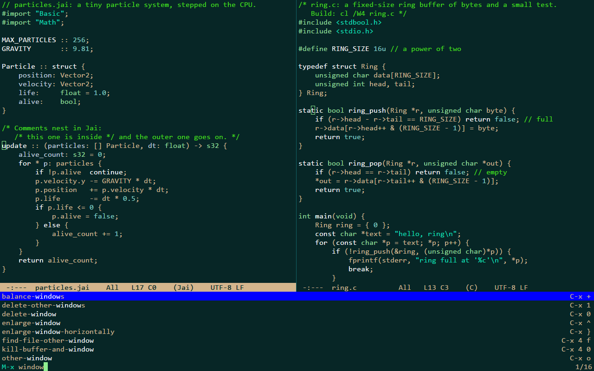

ronin
A small, fast, Emacs-style code editor for Windows, written in C with no dependencies.

Why
ronin keeps three goals in a fixed order: input latency and speed first, a small and simple program second, features third. ronin's own work for a keystroke, the command and its frame, takes 20 to 30 microseconds; an idle ronin draws nothing and uses no CPU; the whole editor is one executable of under half a megabyte that needs nothing but Windows.
It looks and works like Emacs as Jonathan Blow uses it, with ideas from the Focus and 4coder editors: no tabs, menus, toolbars or scroll bars; windows side by side, an inverse-video mode line, a minibuffer, a block cursor, and Emacs' default keys.
What it does
- Emacs editing: point and mark, the kill ring (linked to the clipboard), undo and undo-redo, isearch, query-replace,
M-x, automatic indentation. - Multiple cursors, as in Emacs' multiple-cursors package: typing at 10,000 cursors takes about 2 ms a key.
- Highlighting for Jai, C, C++, C#, JavaScript and TypeScript by hand-written lexers.
- Projects: a fuzzy file finder, project-wide search on background threads, builds with jump to error, a read-only view of git's changes, and a terminal or an AI assistant's command line one key away.
- A command list (
C-S-p): every command with what it does and its keys. - One text configuration file, applied as soon as it is saved; every key can be rebound; five themes.
- Files: UTF-8 and UTF-16, line endings kept byte for byte, a 100 MB file opens in about 40 ms; modified file
buffers recovered after a crash of ronin when they can be written (not
*scratch*, a power loss or a forced end).
Where to start
Install ronin, then read First steps. Every command and its default keys are on the keys page, every setting on the settings page, and what ronin does not do is under Known limits.